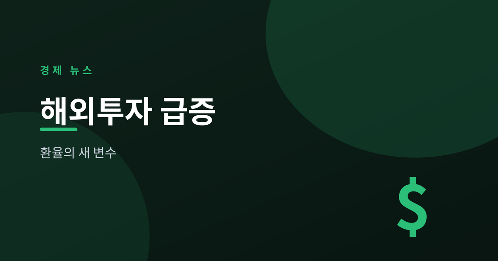
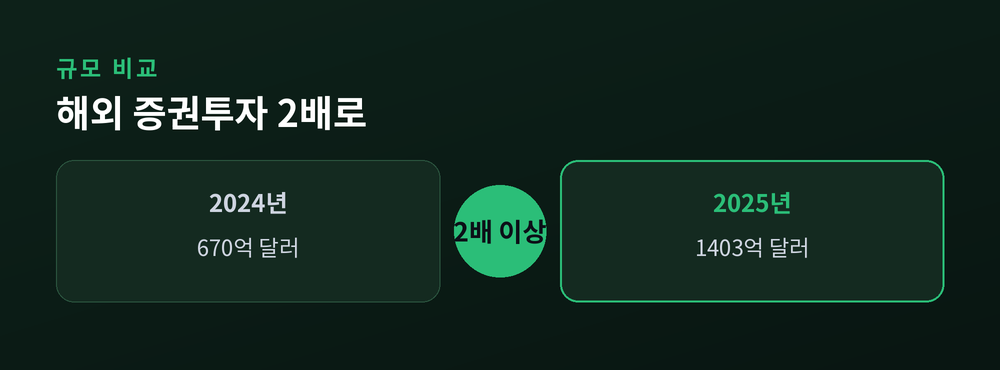
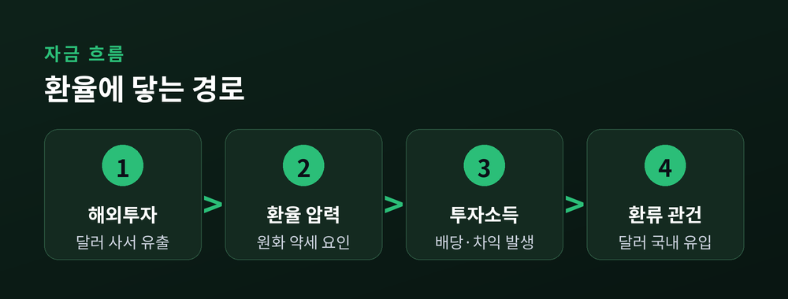
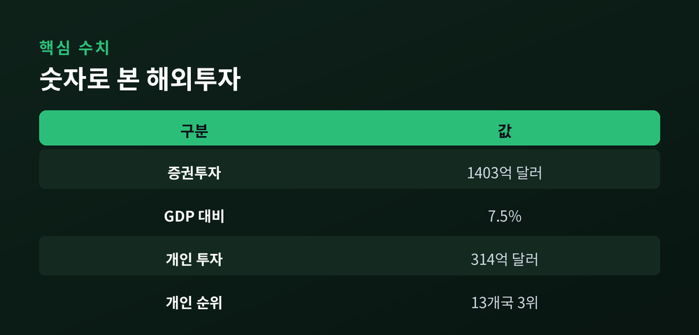
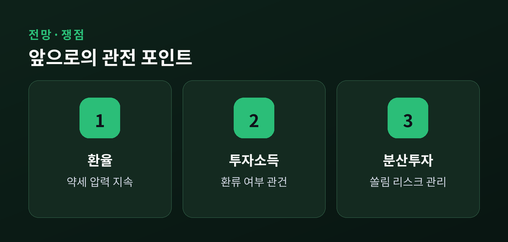

원화 약세의 새 변수가 되다

2025년 한국의 해외 증권투자가 사상 최대 규모로 불어났습니다. 한국은행 집계에 따르면 지난해 증권투자 규모는 1,403억 달러로, 2024년의 670억 달러를 두 배 넘게 웃돌았습니다. 국내총생산(GDP) 대비 비율도 3.6%에서 7.5%로 껑충 뛰었습니다.
이 흐름의 한가운데에는 미국 주식을 사 모으는 개인 투자자, 이른바 '서학개미'가 있습니다. 개인의 해외 증권투자만 314억 달러에 달해 비교 대상 13개국 중 3위를 기록했습니다. 문제는 이렇게 빠져나간 달러가 원·달러 환율과 대외건전성에 어떤 흔적을 남기느냐입니다. 한국은행은 최근 보고서에서 바로 이 지점을 짚었습니다.
2025년 한국의 해외 증권투자는 1,403억 달러로 집계됐습니다. 2024년(670억 달러)과 비교하면 1년 만에 두 배 이상으로 커진 규모입니다. GDP 대비 증권투자 비율이 3.6%에서 7.5%로 두 배 넘게 오른 점은 이 증가세가 일시적 현상이 아니라 구조적 변화에 가깝다는 신호입니다.
특히 개인 투자자의 존재감이 두드러졌습니다. 서학개미의 해외 증권투자 규모는 314억 달러로, 한국은행이 비교한 13개국 가운데 개인 부문에서 3위를 차지했습니다. 서학개미가 보유한 미국 투자자산은 1조 달러를 넘어섰고, 한국의 해외투자 중 절반가량이 미국으로 향한 것으로 나타났습니다.

가장 큰 배경은 미국 증시의 강세와 국내 투자자들의 눈높이 변화입니다. 국내 증시의 상대적 부진이 이어지는 사이, 개인 투자자들은 성장성이 높다고 판단한 미국 빅테크와 지수형 상품으로 자금을 옮겼습니다. 환차익 기대와 분산투자 심리도 이 흐름을 부채질했습니다.
기관투자자 역시 대외자산 축적에 속도를 냈습니다. 연기금과 보험사 등은 국내에서 소화하기 어려운 대규모 자금을 해외 증권시장에 배분하며 포트폴리오를 넓혔습니다. 개인과 기관이 같은 방향으로 움직이면서 해외투자 규모가 단기간에 크게 불어난 것입니다. 한국은행은 이러한 대외자산 축적이 장기적으로 투자소득 확충과 외화유동성 완충력 제고, 대외지급능력 강화에 기여한다는 점에서 긍정적이라고 평가했습니다.
문제는 자금이 나가는 과정에서 발생하는 환율 압력입니다. 해외 주식을 사려면 원화를 달러로 바꿔야 하고, 이 달러 수요는 원화 약세, 즉 원·달러 환율 상승 방향으로 작용합니다. 해외투자 급증이 환율 상승 압력을 키운다는 지적이 나오는 이유입니다.
한국은행이 주목한 핵심은 '투자소득의 환류' 여부입니다. 해외투자가 늘면 배당과 매매차익 같은 투자소득도 함께 증가하지만, 이 소득이 국내로 되돌아오지 않고 현지에서 재투자되면 실제 달러 유입 효과는 제한적입니다. 실제로 "투자소득이 늘어도 달러가 들어오지 않는다"는 구조적 변화가 관찰되고 있어, 환율을 볼 때 무역수지뿐 아니라 이 소득 흐름까지 함께 봐야 한다는 진단이 나옵니다.

핵심 수치를 정리하면 변화의 크기가 한눈에 들어옵니다. 증권투자 규모는 1,403억 달러, GDP 대비 비율은 7.5%, 개인 투자자 몫은 314억 달러로 13개국 중 3위입니다. 특정 국가에 대한 쏠림도 뚜렷해, 해외투자의 절반가량이 미국에 집중돼 있습니다.
이 숫자들은 두 얼굴을 지닙니다. 대외자산이 두터워진다는 점에서는 국가의 지급 능력과 위기 대응력이 좋아지는 신호입니다. 반대로 특정 시장과 통화에 대한 의존도가 커진다는 점에서는, 해당 시장이 흔들릴 때 국내 투자자와 환율이 함께 출렁일 위험도 커집니다.

앞으로의 관전 포인트는 세 가지입니다. 첫째는 환율입니다. 해외투자가 계속 늘면 달러 수요가 유지되면서 원화 약세 압력이 이어질 수 있습니다. 둘째는 투자소득의 환류입니다. 쌓인 대외자산에서 나온 소득이 국내로 돌아오는지가 중장기 환율 흐름을 가를 변수로 지목됩니다.
셋째는 쏠림 위험입니다. 미국 한 곳에 자산이 집중된 구조는 해당 증시가 조정을 받을 때 손실이 커질 수 있습니다. 한국은행도 대외자산 축적의 긍정적 측면을 인정하면서, 소득 환류 구조의 변화를 예의주시해야 한다고 강조했습니다.

정리하면, 서학개미가 이끈 해외투자 급증은 한국 경제에 두터운 대외자산이라는 자산을 남기는 동시에, 환율과 쏠림이라는 새로운 숙제를 함께 안겨줬습니다. 개인 투자자 입장에서는 수익률만큼이나 환율과 분산이라는 두 축을 함께 살피는 자세가 필요한 시점입니다.
이 글은 정보 제공을 위한 해설로, 특정 종목이나 자산에 대한 투자 권유가 아닙니다. 투자 판단과 그 결과에 대한 책임은 투자자 본인에게 있습니다.
참고: 이데일리, 디지털데일리, 뉴스핌, 한국은행(BOK), KDI 경제교육정보센터